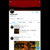

<!DOCTYPE html>
<html lang="en">
 <head>
  <meta charset="utf-8"/>
  <title>
   Zeauc Cxt Twitter account revealed to be an ARG. Other mysteries still remain...
  </title>
  <meta content="Post on /v/Pizzagate archived on 2018-02-26 by MrBoneCrusher." name="description"/>
  <meta content="Zeauc Cxt Twitter account revealed to be an ARG. Other mysteries still remain..." property="og:title"/>
  <meta content="Post on /v/Pizzagate archived on 2018-02-26 by MrBoneCrusher." property="og:description"/>
  <link href="../../page.css" rel="stylesheet"/>
  <meta content="https://voat.pizzagate.hackliberty.org/thumbnails/b8/9b/b89b6c1b-c734-4eec-af53-40f2aa3d2b0a.jpg" property="og:image"/>
  <meta content="https://voat.pizzagate.hackliberty.org/v/pizzagate/2417267.html" property="og:url"/>
  <meta content="width=device-width, initial-scale=1" name="viewport"/>
  <link href="https://voat.pizzagate.hackliberty.org/2417267.html" rel="canonical"/>
  <meta content="article" property="og:type"/>
  <meta content="Voat /v/Pizzagate Archive" property="og:site_name"/>
  <meta content="en_US" property="og:locale"/>
  <meta content="summary_large_image" name="twitter:card"/>
  <meta content="Zeauc Cxt Twitter account revealed to be an ARG. Other mysteries still remain..." name="twitter:title"/>
  <meta content="Post on /v/Pizzagate archived on 2018-02-26 by MrBoneCrusher." name="twitter:description"/>
  <meta content="https://voat.pizzagate.hackliberty.org/thumbnails/b8/9b/b89b6c1b-c734-4eec-af53-40f2aa3d2b0a.jpg" name="twitter:image"/>
 </head>
</html>
<body class="dark">
 <div id="container">
  <!-- array (
  'submissionid' => 2417267,
  'creationDate' => '2018-02-26 09:31:16',
  'domain' => 'medium.com',
  'formattedContent' => NULL,
  'isAdult' => 0,
  'isAnonymized' => 0,
  'subverse' => 'pizzagate',
  'thumbnail' => 'b89b6c1b-c734-4eec-af53-40f2aa3d2b0a.jpg',
  'title' => 'Zeauc Cxt Twitter account revealed to be an ARG. Other mysteries still remain...',
  'url' => 'https://medium.com/@BryonAdams5/the-zeaux-cxt-arg-ended-strange-connections-left-b04d59206d27',
  'userName' => 'MrBoneCrusher',
  'archivedLink' => NULL,
  'archivedDomain' => NULL,
  'isDeleted' => 0,
) -->
  <div style="text-align:center; font-size:24px; font-weight:bold;">
   <a href="../../index.html" style="text-decoration: none; color: inherit;">
    Voat /v/Pizzagate Archive
   </a>
  </div>
  <div class="content" role="main">
   <div class="sitetable linklisting" id="siteTable">
    <div class="submission id-2417267 link type-text" id="submission-2417267">
     <a name="submissionTop">
     </a>
     <p class="parent">
     </p>
     <a class="thumbnail may-blank" href="https://medium.com/@BryonAdams5/the-zeaux-cxt-arg-ended-strange-connections-left-b04d59206d27" target="_self">
      
     </a>
     <div class="entry unvoted">
      <p class="title">
       <a class="title may-blank" href="https://medium.com/@BryonAdams5/the-zeaux-cxt-arg-ended-strange-connections-left-b04d59206d27" tabindex="1" target="_self" title="Zeauc Cxt Twitter account revealed to be an ARG. Other mysteries still remain...">
        Zeauc Cxt Twitter account revealed to be an ARG. Other mysteries still remain...
       </a>
       <span class="domain">
        (
        <a href="https://archive.searchvoat.co/search.php?d=medium.com">
         medium.com
        </a>
        )
       </span>
      </p>
      <p class="tagline">
       submitted
       <time datetime="2018-02-26T09:31:16+00:00" title="02/26/2018 9:31:16 AM">
        2018-02-26T09:31:16
       </time>
       by
       <span class="userattrs">
        <a class="author may-blank" href="https://archive.searchvoat.co/search.php?u=MrBoneCrusher">
         MrBoneCrusher
        </a>
       </span>
      </p>
      <ul class="flat-list buttons">
       <li class="first">
        <a class="comments may-blank" href="https://archive.searchvoat.co/v/pizzagate/2417267" rel="nofollow">
         3 comments
        </a>
       </li>
      </ul>
     </div>
     <div class="child">
     </div>
     <div class="clearleft">
     </div>
    </div>
    <div class="clearleft">
    </div>
   </div>
   <div class="horizontal-line">
   </div>
   <div class="commentarea">
    <div class="sitetable nestedlisting" id="siteTable">
     <div class="child id-12041219 comment even" style="">
      <div class="entry unvoted">
       <div class="noncollapsed" id="12041219" style=";">
        <p class="tagline">
         <a class="author may-blank" href="https://archive.searchvoat.co/search.php?u=think-">
          think-
         </a>
         <span class="userattrs">
         </span>
         <time datetime="2018-02-27T17:51:32+00:00" title="2/27/2018 5:51:32 PM">
          2018-02-27T17:51:32
         </time>
        </p>
        <div class="usertext-body may-blank-within" id="commentContent-12041219">
         <div class="md">
          <p>
           <p>
            <a href="https://archive.searchvoat.co/user/MrBoneCrusher">
             @MrBoneCrusher
            </a>
            : Unfortunately, I'll have to delete the post now, since the 24 hours period has passed. Removing per Rule 3, please see  comment by
            <a href="https://archive.searchvoat.co/user/Ben_Matlock">
             @Ben_Matlock
            </a>
            . You can repost unedited to
            <a href="https://archive.searchvoat.co/v/pizzagatewhatever">
             v/pizzagatewhatever
            </a>
            , or edit the title as requested and repost to
            <a href="https://archive.searchvoat.co/v/pizzagate">
             v/pizzagate
            </a>
            .
           </p>
           <p>
            Thank you.
           </p>
          </p>
         </div>
        </div>
        <ul class="flat-list buttons">
         <li class="first">
          <a class="bylink" href="https://archive.searchvoat.co/v/pizzagate/2417267/12041219" rel="nofollow">
           link
          </a>
         </li>
        </ul>
       </div>
      </div>
     </div>
     <div class="child id-12031228 comment even" style="">
      <div class="entry unvoted">
       <div class="noncollapsed" id="12031228" style=";">
        <p class="tagline">
         <a class="author may-blank" href="https://archive.searchvoat.co/search.php?u=ben_matlock">
          ben_matlock
         </a>
         <span class="userattrs">
         </span>
         <time datetime="2018-02-26T15:42:04+00:00" title="2/26/2018 3:42:04 PM">
          2018-02-26T15:42:04
         </time>
        </p>
        <div class="usertext-body may-blank-within" id="commentContent-12031228">
         <div class="md">
          <p>
           <p>
            hey MBC, we need all submission titles to draw a link to pizzagate in some way.
           </p>
           <blockquote>
            <p>
             <em>
              Rule 3: All titles must adequately describe post content and must establish direct relevance to pizzagate.
             </em>
            </p>
           </blockquote>
           <p>
            unfortunately, we are unable to edit titles here on voat, so we suggest that you self-delete this, rewrite the title to show some kind of connection to the global trafficking and abuse of children by the elite, and try to explain the relevance of this more clearly.  or, alternatively, you could repost, as is, to
            <a href="https://archive.searchvoat.co/v/pizzagatewhatever">
             v/pizzagatewhatever
            </a>
            .
thanks!
           </p>
          </p>
         </div>
        </div>
        <ul class="flat-list buttons">
         <li class="first">
          <a class="bylink" href="https://archive.searchvoat.co/v/pizzagate/2417267/12031228" rel="nofollow">
           link
          </a>
         </li>
        </ul>
       </div>
      </div>
     </div>
     <div class="child id-12029612 comment even" style="">
      <div class="entry unvoted">
       <div class="noncollapsed" id="12029612" style=";">
        <p class="tagline">
         <a class="author may-blank" href="https://archive.searchvoat.co/search.php?u=MrBoneCrusher">
          MrBoneCrusher
         </a>
         <span class="userattrs">
         </span>
         <time datetime="2018-02-26T09:42:10+00:00" title="2/26/2018 9:42:10 AM">
          2018-02-26T09:42:10
         </time>
        </p>
        <div class="usertext-body may-blank-within" id="commentContent-12029612">
         <div class="md">
          <p>
           <p>
            This was posted a few months ago but for anyone new it was a few creepy Twitter and YouTube accounts that were posting coded messages about things like Elsagate, the Finders cult (a cult that molested children), and the town of Pelzer, SC. The guy who orchestrated it claimed that he was trying to spread awareness of Elsagate. Frankly I think the whole thing was foolish and wasted people's time that could've been spent on real things, but whatever.
           </p>
           <p>
            The important take-away is that we nor the creator of this ARG know who James Latham is, or who the guy who tweeted about Anne Faber is, and whether or not they're the same person. The creator claims that James just randomly tweeted to him in code one day.
           </p>
           <p>
            The videos on James Lathams Youtube are disturbing, and his main photo is a young child. He seems to have a foot fetish and to be stalking a Donna Posey, and seems to live in Detroit.
           </p>
          </p>
         </div>
        </div>
        <ul class="flat-list buttons">
         <li class="first">
          <a class="bylink" href="https://archive.searchvoat.co/v/pizzagate/2417267/12029612" rel="nofollow">
           link
          </a>
         </li>
        </ul>
       </div>
      </div>
     </div>
    </div>
   </div>
  </div>
 </div>
 <div class="footer-container">
 </div>
</body>
